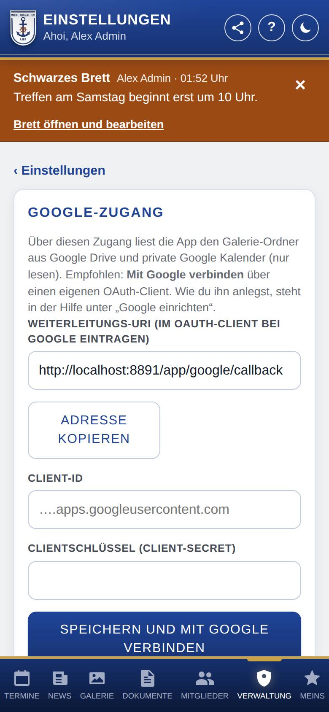
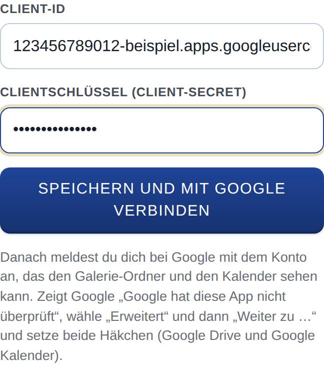

Google-Zugang
Über den Google-Zugang liest die App die Fotos der Galerie aus Google Drive und auf Wunsch einen privaten Google Kalender. Außerdem kann sie damit wöchentlich eine Datensicherung in Google Drive ablegen. Hier verbindest du die App einmal mit Google.

So öffnest du die Seite
Tippe unten auf Verwaltung, dann auf Einstellungen und auf Google-Zugang. Im Einrichtungsassistenten steht derselbe Abschnitt im Schritt für die Galerie bzw. den Kalender.
Was du hier siehst
- Weiterleitungs-URI (im OAuth-Client bei Google eintragen): die Adresse, die du bei Google einträgst, mit dem Knopf Adresse kopieren.
- Client-ID und Clientschlüssel (Client-Secret): die beiden Werte von Google, mit dem Knopf Speichern und mit Google verbinden.
- ✓ Verbunden mit Google als …: steht statt der Felder, sobald die Verbindung besteht, mit Verbindung trennen. Dahinter steht, ob die App auch den Kalender lesen darf.
- Alternative: Dienstkonto mit JSON-Schlüssel: zum Aufklappen, für den zweiten Weg (siehe unten).
Für den Kalender allein brauchst du keinen Google-Zugang: Die geheime Adresse im iCal-Format geht ohne (siehe Kalender einrichten).
So gehst du vor
Empfohlen ist Mit Google verbinden. Dafür legst du einmal ein kleines Projekt bei Google an, trägst zwei Werte in der App ein und meldest dich bei Google an. Das dauert etwa 20 Minuten und kostet nichts.
Für Fortgeschrittene: Google nennt das, was du anlegst, einen OAuth-Client: einen Zugang, mit dem eure App im Namen eures Google-Kontos lesen darf, nachdem du einmal zugestimmt hast. Angelegt wird er in der Google Cloud Console, der Verwaltungsseite von Google für solche Zugänge.
1. Projekt anlegen
- Öffne console.cloud.google.com und melde dich mit dem Google-Konto der Kompanie an. Beim ersten Mal bestätigst du die Nutzungsbedingungen.
- Klicke oben links auf die Projektauswahl und dann auf Neues Projekt. Gib einen Namen ein, z. B. „Kompanie-App“, und klicke auf Erstellen.
- Prüfe, dass oben das neue Projekt ausgewählt ist. Alle weiteren Schritte gelten für dieses Projekt.
2. Schnittstellen einschalten
Öffne im Projekt diese Seiten und klicke jeweils auf Aktivieren:
- für die Galerie und die Sicherungen: Google Drive API
- für einen privaten Kalender: Google Calendar API
3. Google Auth Platform einrichten
- Öffne die Google Auth Platform und klicke auf Jetzt starten.
- App-Informationen: Trage als App-Name z. B. den Namen der Kompanie ein und wähle bei E-Mail-Adresse für den Nutzersupport deine Adresse.
- Zielgruppe: Intern nur, wenn das Projekt zu einer Google-Organisation gehört (Google Workspace) und das verbundene Konto dazugehört. Mit einem normalen Google-Konto wählst du Extern.
- Kontaktdaten: Trage eine E-Mail-Adresse ein, stimme den Richtlinien zu und klicke auf Erstellen.
- Nur bei Extern: Öffne links Zielgruppe, klicke unter „Veröffentlichungsstatus“ auf App veröffentlichen und bestätige. Der Status ist danach In Produktion. Bleibt er auf „Testen“, läuft die Verbindung nach 7 Tagen ab.
Unter Datenzugriff trägst du nichts ein. Dort eingetragene Berechtigungen verlangen eine Prüfung durch Google. Die App fragt ihre Berechtigungen beim Verbinden selbst an; das reicht.
4. Zugang bei Google anlegen
- Tippe in der App auf Adresse kopieren. Die Weiterleitungs-URI ist für jede Installation anders.
- Öffne in der Google Auth Platform links Clients und klicke auf Client erstellen.
- Wähle als Anwendungstyp Webanwendung und gib einen Namen ein, z. B. „Kompanie-App“.
- Klicke unter Autorisierte Weiterleitungs-URIs auf URI hinzufügen und füge die kopierte Adresse genau so ein (ohne Leerzeichen, mit
https://). Klicke auf Erstellen. - Google zeigt Client-ID und Clientschlüssel. Kopiere beide. Den Clientschlüssel zeigt Google nur jetzt einmal an; lade am besten gleich die JSON-Datei herunter und bewahre sie sicher auf. Geht er verloren, legst du beim Client einen neuen Schlüssel an.
Client-ID und Clientschlüssel gehören zusammen wie Benutzername und Passwort. Gib sie nicht weiter und verschicke sie nicht per E-Mail.
5. Mit Google verbinden
- Trage in der App die Client-ID und den Clientschlüssel (Client-Secret) ein.
- Tippe auf Speichern und mit Google verbinden.
- Melde dich bei Google mit dem Konto an, das den Galerie-Ordner und den Kalender sehen kann.
- Google warnt: „Google hat diese App nicht überprüft“. Das ist bei einer eigenen App normal. Klicke auf Erweitert und dann auf Weiter zu ….
- Google fragt nach den Berechtigungen: Lesen in Google Drive, Lesen in Google Kalender und eigene Dateien in Google Drive anlegen (für die Sicherungen). Setze alle Häkchen und klicke auf Weiter.
- Google schickt dich zurück in die App. Dort steht ✓ Verbunden mit Google als … und Es darf auch den Kalender lesen.

Steht stattdessen, dass es den Kalender noch nicht lesen darf, fehlte das Häkchen für den Kalender: Tippe auf Verbindung trennen und verbinde noch einmal. Client-ID und Clientschlüssel bleiben gespeichert; das Feld für den Clientschlüssel kannst du dann leer lassen.
Meldet die App einen Fehler, steht die Ursache dabei. Häufig: Die Weiterleitungs-URI bei Google weicht ab, der Clientschlüssel stimmt nicht, das Häkchen für Google Drive fehlte oder die Anmeldung wurde abgebrochen. Die Client-ID endet auf .apps.googleusercontent.com.
6. Galerie und Kalender eintragen
Danach trägst du auf den Seiten Galerie einrichten den Galerie-Ordner und unter Kalender einrichten die Kalender-IDs ein.
Alternative: Dienstkonto mit JSON-Schlüssel
Statt „Mit Google verbinden“ geht auch ein Dienstkonto: ein eigenes Google-Konto nur für die App, das nichts sieht, was du ihm nicht freigibst. Es braucht keine Anmeldung, aber einen Schlüssel, den manche Google-Organisationen sperren. Sicherungen in Google Drive gehen damit nicht.
- Lege wie oben ein Projekt an und schalte die Schnittstellen ein (Schritte 1 und 2).
- Öffne IAM und Verwaltung → Dienstkonten und klicke auf Dienstkonto erstellen. Gib einen Namen ein, klicke auf Erstellen und fortfahren, überspringe die beiden optionalen Schritte und klicke auf Fertig.
- Klicke auf das neue Dienstkonto. Merke dir seine E-Mail-Adresse (endet auf
…iam.gserviceaccount.com). - Öffne den Reiter Schlüssel → Schlüssel hinzufügen → Neuen Schlüssel erstellen → JSON → Erstellen. Der Browser lädt eine JSON-Datei herunter.
- Gib in Google Drive den Galerie-Ordner für diese E-Mail-Adresse frei (Rolle Betrachter). Für einen Kalender: in Google Kalender beim Kalender ⋮ → Einstellungen und Freigabe → Für bestimmte Personen oder Gruppen freigeben, Berechtigung Alle Termindetails sehen.
- Klappe in der App Alternative: Dienstkonto mit JSON-Schlüssel auf, füge den Inhalt der JSON-Datei bei Schlüssel des Dienstkontos (JSON) ein und tippe auf Schlüssel speichern. Danach steht dort die E-Mail-Adresse des Dienstkontos.
Die JSON-Datei ist ein Zugangsschlüssel. Gib sie nicht weiter und lösche sie nach dem Einfügen von deinem Rechner. „Schlüssel erstellen ist deaktiviert“? In Organisationen von Google Workspace sperrt eine Richtlinie das oft. Dann bittest du den Admin der Organisation, die Richtlinie iam.disableServiceAccountKeyCreation für dieses Projekt aufzuheben, oder du nutzt „Mit Google verbinden“.
Mit Schlüssel ersetzen trägst du einen neuen Schlüssel ein, mit Schlüssel entfernen löschst du ihn.
Gut zu wissen
- Besteht eine Verbindung mit Google, hat sie Vorrang vor dem Dienstkonto.
- Mit „Mit Google verbinden“ darf die App alles lesen, was das verbundene Konto in Drive und Kalender sehen kann, liest aber nur den eingetragenen Galerie-Ordner und die eingetragenen Kalender. Schreiben darf sie nur in Dateien, die sie selbst angelegt hat (die Sicherungen).
- Verbindung trennen beendet den Zugriff. Ebenso endet er, wenn du in deinem Google-Konto unter „Sicherheit → Drittanbieter-Apps und -Dienste“ den Zugriff der App entfernst oder den Schlüssel des Dienstkontos bei Google löschst.
- Wurde die Verbindung hergestellt, bevor es die Sicherungen in Google Drive gab, fehlt ihr die Berechtigung für eigene Dateien. Trenne sie und verbinde neu, wenn du die Sicherungen nutzen willst.
- Mit WordPress gibt es den Google-Zugang auch im WordPress-Backend auf der Seite der App; dort steht dieselbe Weiterleitungs-URI.